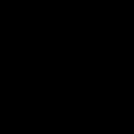

Cloud Sim Final Report
Project Members: Sayan Das, Andrew Wang, Mohak Jain, Anthony Zhou
Abstract
We created a real-time voxel-based simulation of clouds. Cloud simulation is an exciting and relevant topic due to its use in rendering realistic outdoor scenes, such as in games and movies. We incorporated a pseudo-physical model to dynamically render clouds in a voxel space, in which we incorporated cloud movement via advection, elliptical cloud spaces, smoothing via cloud density calculation, and rendering via THREE.JS’s Lambertian model and ray marching to arrive at our final product. The final simulation goes through the process of a cloud forming and evolving over time and wind. We are proud of our very realistic-looking result, and we learned a great deal about the THREE.JS/WebGL tech stack we used along with the reinforcement of many of the concepts we were exposed to in this course.
Technical Approach
Our process was generally divided into simulation, rendering, and beautification. We started by implementing a base physical model in our voxel space based on a 2000 paper from Dr. Tomoyuki Nishita’s group at the University of Tokyo. We then moved into the process of rendering these voxels in a presentable and realistic way. Finally, we played with simulation parameters to create as realistic of a demonstration as possible.
Simulation
The 2000 Nishita paper suggests that an effective voxel-based pseudo-physical cloud model can be constructed by assigning each voxel in the space a set of three boolean values. These values are activation of phase transition from vapor to cloud (act), humidity (hum), and cloud (cld). Clouds are only rendered if the cld variable is set to true. At each time step, we calculate the value of these three variables using the following transition rules:

We begin by assigning each voxel’s hum and act parameters at random and with cld as off everywhere in the space. We get the following basic result, where this rectangular prism is the entire voxel space:
With this base simulation done, we moved on to adding movement to our model.
Advection
Advection is movement by wind, and governed rather straightforwardly by a simple set of formulas at each time step:
The velocity function is specified by the animator, and one can implement a piecewise-linear wind function in order to move different parts of the cloud at different speeds. Our implementation is a unidirectional movement along the x-axis based on which z-coordinate each voxel is at.
An example of this is shown below. Notice how the cloud moves at different speeds and directions for different values of z:
Realism: Probabilistic extinction and ellipses
As we see above, the simulation currently results in all of our “clouds” reaching a steady state with no irregularities, forming and moving rather unrealistically. However, we want our model to be dynamic and continually evolving, which meant introducing a handful of random events.
First, we introduce a set of three probabilities that allow for our simulation to have random behavior: An extinction value, used to probabilistically turn the cloud boolean off, and an activation and humidity value, which probabilistically turn the activation and humidity of a voxel on. THroughout the project, we continuously tweaked these for more realistic clouds.
We then followed a suggestion from the Nishita paper to use ellipsoids to seed our clouds. We generated random, axis-aligned ellipsoids, ensuring that they were both within our voxel space and not too large. We then used these ellipsoids to weigh the probabilities mentioned above, at a high level ensuring that the cloud boolean was more likely to turn on near the center of the ellipsoid. We calculated these probabilities additively, summing probabilities from all ellipsoids, and ensuring that voxels that were not in any ellipsoids were impossible to form clouds.
We determined that the below metric performed well and produced realistic clouds, making the edges of clouds sparse and the centers dense.
Rendering: Density, Ray Marching, & Linear Color Interpolation
The Nishita paper recommends using density to smooth clouds over space and time, forming metaballs and using them to calculate density at each point.
In our implementation, we decided to only smooth over space, since we did not want to add onto our render time with a second pass. We smoothed over a 3x3 cube, weighing each voxel’s contribution by its distance to our center voxel. We also did not decide to implement metaballs, instead simply biasing this density value for a voxel’s opaqueness.
We decided on this smoothing function as opposed to others, like a uniform contribution, because it gave more interesting and varied clouds.

Note how the cloud appears much smoother than just particles. However, it appears to lack texture.
For rendering, the 2000 Nishita paper recommends that we form metaballs and then apply splatting. Our approach, however, does not use metaballs.
We decided to take advantage of the objects and classes implemented in 3JS. We created a scene with a directional light source to simulate the sun and used the built in WebGLRenderer for rendering. For the actual clouds, we assigned each voxel in the voxel space a cube object with Lambertian material. All cubes were made transparent, since clouds allow some light to pass through and we wanted to be able to capture some of this behavior. Opacity was dictated by a voxel’s density as described above, since more dense clouds should block more of the light. However, clouds still lacked texture since all of these particles were colored uniformly. Our approach was incompatible with the splatting method, so we had to find another way to color the clouds realistically.
We chose to implement a variation of the ray marching technique recommended by the Häggström paper. For each voxel, we approximated the light reaching it by tracing a path from the voxel to the light source and accumulating the density at the first twenty voxels along this path. We then bias this to get a value that we use to linearly interpolate between light and dark grey colors. We note that our approximation is biased since we only take into account the first twenty steps, though in our simulation, this provides us with the color gradient that we desire, as most clouds do not have semi-axes larger than twenty voxels. Through experimentation, we also biased towards a darker color, as this tended to provide more realism.
Beautification
In order to achieve as realistic a model as possible, we played with the many parameters of our system. We set our THREE.JS voxel size to be 0.1 x 0.1 x 0.1, and selected colors of grey that we felt would be most realistic.
We then tinkered with the probabilities of the extinction, humidity, and phase activation booleans. For each voxel these probabilities represent the chance that the cloud either randomly turns off, or that the humidity turns on, or that the phase activation turns on at each time step.
Our experiments demonstrate that these values generally need to fall into certain ranges in order to achieve a realistic result. For example, a high extinction probability would cause the cloud to become too thin, while a very low extinction probability would cause the cloud to be too saturated, resembling a cotton ball instead.
A low phase activation probability was necessary for the simulation to be realistic as keeping this too high would cause the cloud to spontaneously appear in a large mass in just a single time step. Ensuring that this was low meant that the clouds would take more time steps to swirl up into a realistic shape, as is the case with natural cloud formation in the real world.
Humidity probability also needed to be balanced because a high humidity probability led to a much more ball-like cloud, which was far more spherical than real clouds are.
Extension
We feel there are many areas we would have liked to expand on this project with more time. These include some aesthetic improvements, like adding a realistic scene background, more realistic rendering via Mie Scattering, and an easy-to-use GUI.
The simulation is also slower than we would like, especially if we scale up to larger voxel spaces. In order to address this issue, we considered more efficient implementations of our voxel space, or even changing to a particle-based model, or implementing the simulation using easily parallelizable operations and running it on a GPU. We actually tried to shift from one large voxel space to a bunch of smaller voxel spaces defined around each ellipsoid, but we were unable to debug it.
In addition, we would try to anti-alias our simulation results. If we were able to use a more efficient implementation, our voxels would be a lot smaller and our results would have fewer artifacts. Other weighting functions or camera angles may also reduce these artifacts as well.
Results
Problems Encountered and Lessons Learned
We had some trouble adding texture to the cloud and producing shadows. Originally, we tried playing around with the shadow properties of objects in 3JS, but this made the cloud appear almost entirely in shadow since the renderer treated each cloud particle as a solid cube. We eventually pivoted to the ray marching technique discussed earlier.
After we implemented advection, we noticed that it was extremely obvious when a cloud moved out of the voxel space. Making the voxel space larger would make our simulation slower and zooming in on the voxel space would make rendering artifacts more apparent. We tried to implement smaller voxel spaces defined around each ellipsoid, so we could see clouds drift off screen, but we were unable to debug the implementation. We ended up zooming in on the voxel space when creating our GIFs.
Overall, we learned how to use 3JS to render objects and how we can approximate physical equations with much simpler models. We got to tune model parameters and implement different weighting functions to alter our final renders and create varied clouds.
References
Dobashi, Yoshinori, et al. "A simple, efficient method for realistic animation of clouds." Proceedings of the 27th annual conference on Computer graphics and interactive techniques. 2000.
Häggström, Fredrik. "Real-time rendering of volumetric clouds." (2018).
Contributions
Mohak Jain: Implemented advection in base physical model, cloud density calculations, and ran experiments to determine the simulation parameters for realistic rendering.
Andrew Wang: Implemented probabilistic extinction and activation, cloud density and ellipsoid seeding, and ray marching and color lerping. Tried to implement ellipsoid based voxel spaces and debug.
Anthony Zhou:
Sayan Das: Implemented voxel and ellipsoid classes, naive cloud formation, seeding and density weighting functions, and ray marching and color lerping. Tried to implement ellipsoid based voxel spaces.